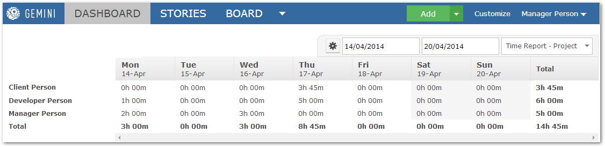
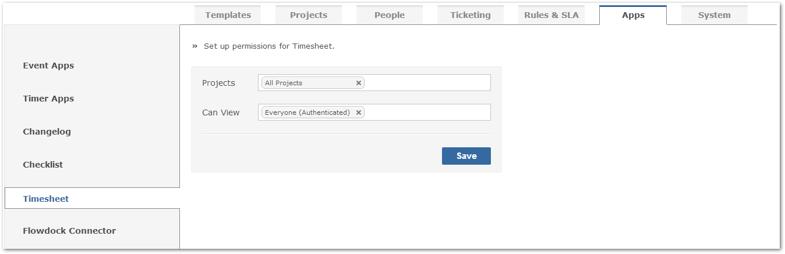
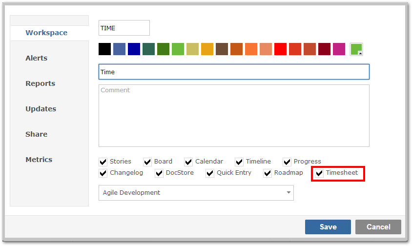
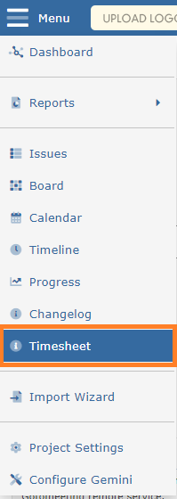
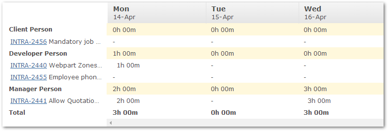
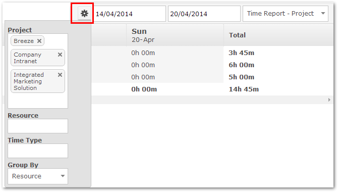
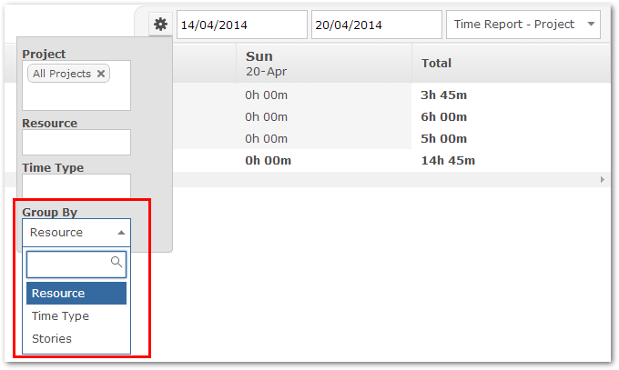

The Timesheep app provides a time report for projects so that you can analyze who spent what time on the project and when. You can view time reports for any date range, current week or month.
You can also break down the time reports by Time Type or just show for selected project resources.

You will want to first ensure that the Timesheet app is associated to the correct projects desired. Please navigate to Customize > Apps > Timesheet. From here, select the projects you wish to enable the Timesheet app for. From this screen, you may also modify which user groups can view within the Timesheet app - this gives you complete control over the app. Once you have made the desired changes, simply click "Save" and navigate back to the item grid.

From here, enabling the Timesheet app for a workspace is very simple. Simply select the workspace that you wish to enable the Timesheet app for, select the "Configure" button (bottom-right). Under the Workspace tab, please ensure that "Timesheet" is selected and enabled.

From the dropdown menu, the new "Timehsheet" option will be present, allowing you to access and view the time reports.

There are two types of timesheets, one is to display all the hours logged by individual users and other is only display all the hours logged by yourself. Also you can drill in and see more information on time logged, all you need to do is click on user's name and you will see the list of tickets have time logged.

The drop down selector on the right hand side of the page, lets you choose which of these reports to run. Whatever report is selected, Gemini always allows cross-project reporting through the Project, resource and time type selector. This control shows a drop-down list of all of the projects, resource and time type to which you have access and you can choose to report on data from multiple projects simultaneously.

Group By Reports
Group By reports have specific characteristics in that they represent a variety of ways to slice and dice your data and their data scope selection is different from other reports. The annotated screen shot below helps to illustrate this flexibility
